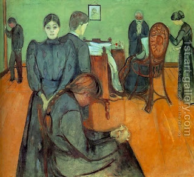

Bava Batra 113 - Inheritance Passed Down Only by Day

Rabba bar Chanina said, based on "... it shall be on the day that he bequeaths to his sons ..." that you may pass down inheritances only by day .
Abaye asked him, - Could it be that the one who dies by day has his sons inherit his property, but the one who dies by night does not? Of course not! Rather, since it says, "... this should be to the children of Israel as a statute of judgment ..." inheritance has the laws of a court case. For example, if three people are visiting a sick person, who instructs them concerning his last will, they have two options: write it down as witnesses or act as judges of a court and execute the judgment - but only by day, since all court cases have to be started by day.
Said Rabba Bar Chanina, "Yes, that is what I meant."
Art: Edvard Munch - Death In The Sick Room